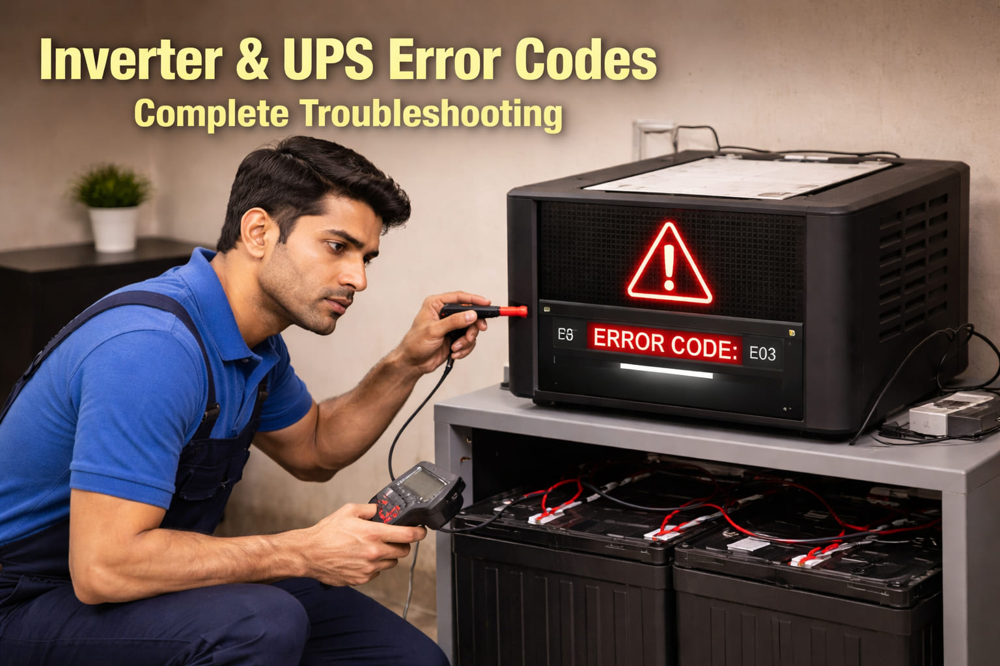

A family from Mandi Bahauddin called me in November 2022. They said "Our Homage inverter is showing E02 error. The battery is new but it is not charging. We have no lights at night." I asked them to check the battery terminals. They found white corrosion on the terminals. They cleaned the terminals with hot water and baking soda. After reconnecting, the inverter started charging. The father said "We were about to buy a new battery for 15,000 rupees. You saved us a lot of money."
Error: E02 | Fix: Clean corroded battery terminals
Inverter and UPS error codes are critical for diagnosing power backup problems in Pakistan, where load shedding is common. These codes indicate issues with batteries, charging circuits, overloads, and internal components. This guide covers all major brands including Homage, Super Asia, Voltas, PEL, ATS, and Crown.
First Step: When you see an error code, note it down and check battery connections, mains power availability, and load connected. Many errors have simple fixes.
A doctor from Chakwal called me in July 2019. He said "My Super Asia inverter is showing E1 error. The inverter beeps and shuts down when I turn on my refrigerator." I asked him about the refrigerator wattage. His refrigerator was 300 watts but the starting surge was 1500 watts. His inverter was only 1000 watts. I told him to buy a higher capacity inverter or install a soft starter on the refrigerator. He bought a 1500 watt inverter. The problem was solved. He said "I wish I had asked you before buying the small inverter."
Error: E1 (Overload) | Fix: Upgrade inverter capacity
| Error Code | Meaning | Common Fix | Difficulty |
|---|---|---|---|
E01 / F01 | Overload | Reduce connected load | Easy |
E02 / F02 | Battery low | Charge battery, check connections | Easy |
E03 / F03 | Over voltage | Check mains, use stabilizer | Medium |
E04 / F04 | Under voltage | Check mains, reduce load | Medium |
E05 / F05 | Over temperature | Improve ventilation, check fan | Easy |
E06 / F06 | Charging error | Check charger circuit | Hard |
E07 / F07 | Short circuit | Disconnect loads, check wiring | Medium |
E08 / F08 | Battery reverse | Check battery polarity | Easy |
A shopkeeper from Mianwali called me in August 2021. He said "My Voltas inverter is showing F05 error. The inverter feels very hot and shuts down after 10 minutes." I asked him where the inverter was installed. He had put it in a small cupboard with no ventilation. I told him to move it to an open area. He moved it outside the cupboard. The fan started running properly. The error went away. He said "Such a simple solution. I was about to call an expensive technician."
Error: F05 | Fix: Improve ventilation, move inverter to open area
E01 Overload
E02 Battery low
E03 Over voltage
E04 Under voltage
E05 Overheat
E06 Charger error
E1 Overload
E2 Battery low
E3 Over voltage
E4 Under voltage
E5 Overheat
E6 Short circuit
F01 Overload
F02 Battery low
F03 Over voltage
F04 Under voltage
F05 Overheat
F06 Charger error
E01 Overload
E02 Battery low
E03 Over voltage
E04 Under voltage
E05 Overheat
E06 Charger error
A farmer from Bannu called me in June 2017. He said "My PEL inverter is showing E04 error. The inverter keeps switching between battery and mains. My tube wells are not working properly." I asked him to check the mains voltage. He measured it and found only 160 volts. The voltage was too low. I told him to contact WAPDA. They fixed the transformer issue. The voltage came back to 220 volts. The inverter worked normally. He said "Thank you for helping a poor farmer."
Error: E04 | Fix: Low mains voltage, contact WAPDA
Symptoms: Inverter beeps continuously, shuts down, shows overload code.
Solutions: Disconnect all loads immediately. Check total wattage of connected devices. Ensure total load is within inverter capacity. Reconnect loads one by one to find problematic device. For motor appliances like refrigerators, the starting surge is 3 to 5 times higher than running wattage. You may need a soft starter or higher capacity inverter.
Symptoms: Inverter runs for short time, shows low battery warning, beeps rapidly.
Solutions: Check battery voltage with multimeter. A 12V battery should read 10.5 to 12.6 volts. Clean and tighten all battery terminals. Check if inverter is charging. Measure voltage while charging, should be 13.5 to 14.5 volts. If battery is old (3 to 5 years), it may need replacement. Check battery water level for lead acid batteries. Top up with distilled water only.
Symptoms: Error appears when mains voltage is high, inverter may disconnect.
Solutions: Check mains voltage with multimeter. If consistently above 250 volts, install a voltage stabilizer before the inverter. Some inverters have input voltage range settings that can be adjusted. Contact WAPDA if voltage regularly exceeds 260 volts.
Symptoms: Error when mains voltage drops, inverter switches to battery frequently.
Solutions: Check mains voltage. If below 180 volts, the inverter may cut off. Reduce load on the same electrical line. Turn off high power devices. Some inverters have low voltage cutoff adjustment. A voltage stabilizer can help with fluctuations.
A university student from Jhang messaged me in December 2023. He said "My Homage inverter is showing E06 error. The battery is not charging. I have exams next week and need electricity for my laptop." I asked him to check the input MCB. He found the MCB was tripped. He reset it. The inverter started charging. He said "Such a simple thing. I was about to call a technician who would charge 2000 rupees just to visit." He passed his exams with good grades.
Error: E06 | Fix: Reset tripped MCB
Symptoms: Inverter shuts down after running, feels hot, error shows.
Solutions: Ensure inverter has proper ventilation. It needs at least 6 inches of clearance on all sides. Check if the cooling fan is running. Replace the fan if it is not working. Reduce the connected load. Clean dust from vents and fan. If the inverter is in direct sunlight, provide shade or move it to a cooler location.
Symptoms: Battery not charging when mains is available, error displayed.
Solutions: Check the input MCB or fuse. Reset it if tripped. Measure charging voltage. It should be 13.5 to 14.5 volts for a 12V battery. Check battery voltage. If it is below 10 volts, the battery may be dead. Clean and tighten all battery connections. If the charger circuit has failed, professional repair is needed.
Symptoms: Inverter shuts down immediately when load is connected, error shows.
Solutions: Disconnect all loads immediately. Check each appliance individually for shorts. Inspect wiring for damage. If no load is connected and the error persists, there is an internal short in the inverter. Professional repair is needed.
Symptoms: Inverter runs only for a few minutes on battery, battery drains quickly.
Solutions: Check battery water level if it is a lead acid battery. Top up with distilled water only. Perform an equalization charge if your inverter supports it. Check specific gravity with a hydrometer. A fully charged battery should read 1.265 to 1.300. If the battery is old (3 to 5 years), it may need replacement. Load test the battery at a battery shop.
Symptoms: White or green powder on terminals, poor connection, charging issues.
Solutions: Disconnect the battery. Negative terminal first. Clean terminals with baking soda and water mixture. Scrub with a wire brush until clean. Apply petroleum jelly or terminal protectant. Reconnect positive terminal first.
Battery Safety Warning: Batteries contain sulfuric acid and produce explosive hydrogen gas. Always work in a ventilated area. Wear eye protection. No smoking or sparks near batteries. Never short battery terminals.
Battery Life Tips: Do not discharge below 50 percent regularly. Keep terminals clean and tight. Ensure proper charging voltage, not over 14.5 volts. For lead acid batteries, check water every 3 months. Keep batteries in a cool, ventilated area. Perform an equalization charge every 3 to 6 months if applicable.
Professional Advice: For internal circuit board repairs, MOSFET or IGBT failures, or transformer issues, always consult certified inverter technicians. High voltage DC can be dangerous. Regular maintenance prevents most problems.